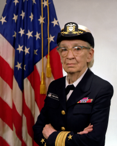

|

Rear Admiral Grace M. Hopper, 1984
|
|
| Nickname | "Amazing Grace" |
|---|---|
| Born | December 9, 1906 New York City, New York, U.S. |
| Died | January 1, 1992 (aged 85) Arlington, Virginia, U.S. |
| Allegiance | United States of America |
| Awards |
|
Grace Brewster Murray Hopper (née Murray; December 9, 1906 – January 1, 1992) was an American computer scientist and United States Navy rear admiral. One of the first programmers of the Harvard Mark I computer, she was a pioneer of computer programming, inventing one of the first compiler related tools. She popularized the idea of machine-independent programming languages, which led to the development of COBOL, an early high-level programming language still in use today.
Hopper had tried to enlist in the Navy during World War II. She had to join the Navy Reserves because she was too old to enlist at the age of 34. Hopper started her computing career working in the Harvard Mark I team led by Howard H. Aiken. In 1949, she joined the Eckert–Mauchly Computer Corporation, joining the team that developed the UNIVAC I in 1944. It was at Eckert–Mauchly that she began developing the compiler. She believed that computer code could be written in English using a programming language based on English words. The compiler would convert that code into machine code understood by computers. By 1952, Hopper finished her compiler, which was written for the A-0 System programming language.
In 1954, Eckert–Mauchly chose Hopper to lead their department for automatic programming, and she led the release of some of the first compiled languages like FLOW-MATIC. In 1959, she participated in the CODASYL consortium, which consulted Hopper to guide them in creating a machine-independent programming language. This led to the COBOL language, inspired by her idea of a language being based on English. In 1966, she retired from the Naval Reserve, but in 1967, the Navy recalled her into active duty. She retired from the Navy in 1986 and found work as a consultant for the Digital Equipment Corporation, sharing her computing experiences.
Owing to her accomplishments and her naval rank, she was sometimes referred to as "Amazing Grace". The U.S. Navy Arleigh Burke-class guided-missile destroyer USS Hopper was named for her, as was the Cray XE6 "Hopper" supercomputer at NERSC. During her lifetime, Hopper was awarded 40 honorary degrees from universities across the world. In 1991, she received the National Medal of Technology. On November 22, 2016, she was posthumously awarded the Presidential Medal of Freedom by President Barack Obama.
“Humans are allergic to change. They love to say, 'We've always done it this way.' I try to fight that. That's why I have a clock on my wall that runs counter-clockwise.”